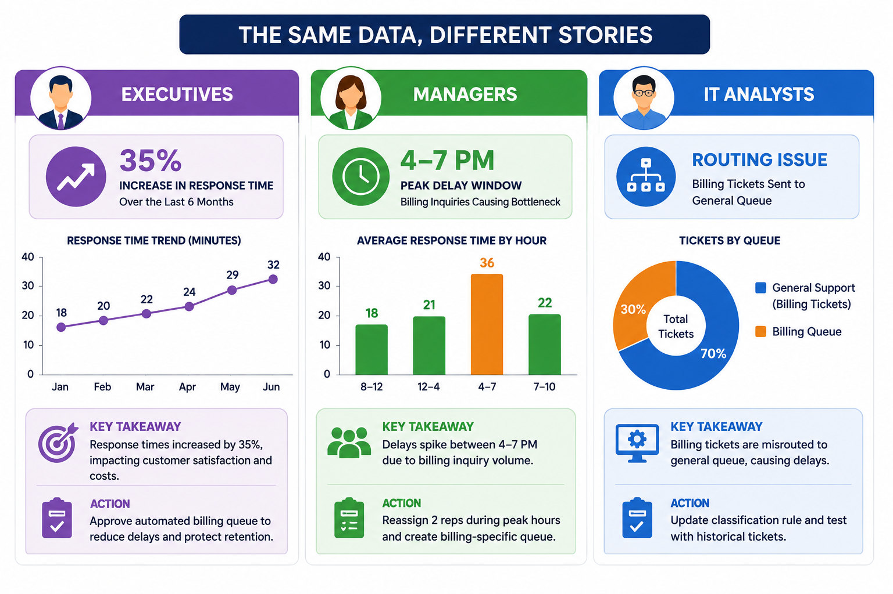
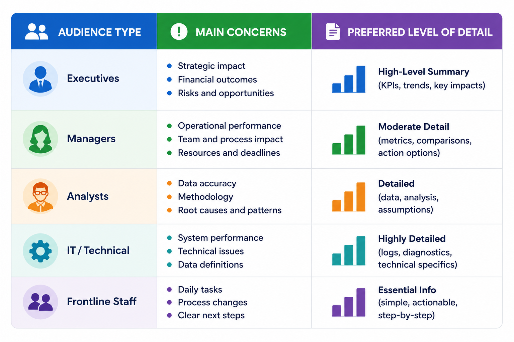
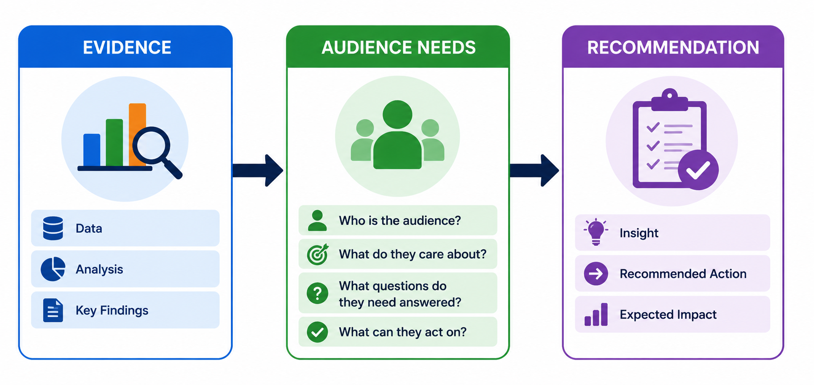

Storytelling with Data
Storytelling with data turns analysis into a narrative that supports organizational decisions and change. It bridges the gap between technical discovery and business strategy by connecting evidence to goals, human decisions, and measurable outcomes. In the previous chapter, the emphasis was on what the data shows. Here, the focus shifts to why it matters and what should happen next.
Decision-makers do not usually need raw output; they need answers. A good data story helps them understand what is happening, why it matters, who or what is affected, how serious the issue may be, what action is appropriate, and how confident they should be in the conclusion. At the same time, the story must remain honest about context and avoid exaggerating or omitting important details.
Comprehension Check 1 of 5
Consider the Audience
The same evidence may need to be presented differently depending on the audience. The underlying data should remain the same, but the emphasis, language, and level of detail should match the audience’s responsibilities and ability to act. A well-told story does not weaken the evidence to make it easier to read; it makes the evidence accessible without losing accuracy.
Consider customer-service response times that increased by 35 percent over six months. To executives, the story might emphasize financial and strategic impact. To customer-service managers, the same data may highlight a bottleneck in a specific time window and suggest a staffing change. To IT analysts, the story may focus on a routing rule in the ticketing system and recommend a technical fix. The facts are the same, but each audience needs a different path from evidence to action.

Comprehension Check 2 of 5
Audience Analysis
When planning a story, it helps to ask a few practical questions. What technical concepts does the audience already understand? What decisions does the audience make, and what processes does it control? What goals is the audience trying to accomplish? What concerns or objections might arise? What authority does the audience have to act? How much detail is needed to understand and trust the findings?
These questions help the analyst tailor the message without changing the evidence. The goal is not to oversimplify the analysis, but to remove unnecessary barriers so the audience can understand it clearly and act on it appropriately.

Comprehension Check 3 of 5
Storytelling Across Information Systems
Storytelling appears throughout information systems because different systems support different decisions. A strong story always begins with the same evidence, but it should end with a recommendation that matches the setting in which that evidence will be used.
- Business intelligence: explain performance trends and whether results are improving or declining.
- Enterprise systems: identify process bottlenecks, delays, and handoff problems.
- Customer relationship management: describe customer behavior and retention opportunities.
- Supply-chain systems: explain delays, shortages, and inventory risks.
- Human-resource systems: analyze turnover, scheduling, and staffing patterns.
- Healthcare systems: identify care patterns while remaining careful about causation.
- Decision-support systems: compare alternatives and recommend the one that best fits the goal.
- Cybersecurity systems: communicate threats, suspicious patterns, and response steps.
These examples show that storytelling is not limited to reports or presentations. It is part of how information systems create value by helping the right people understand the right issue at the right time.
Comprehension Check 4 of 5
Building the Right Narrative
A strong data story connects three things: the evidence, the audience, and the action. It explains what happened, why it matters to this audience, and what the audience should do next. That structure keeps the narrative focused and prevents it from becoming either too technical to use or too simplified to trust.
The story should also respect the limits of the data. If the evidence shows association rather than causation, the recommendation should be framed carefully. If the result depends on a system issue, workflow problem, or special context, that should be stated. Clear storytelling does not hide uncertainty; it helps the audience understand it.

Comprehension Check 5 of 5
Why This Matters
Storytelling with data is what makes analysis actionable. It transforms evidence into a message that different audiences can understand and use while still staying grounded in the data. When the narrative is tailored to the audience and tied to a realistic recommendation, data becomes more than a record of what happened; it becomes a guide for what to do next.
Predictive Modeling and Evaluation with AI
Predictive modeling uses historical data to estimate the likelihood or value of a future or unknown outcome. Common examples include predicting demand, identifying customers who may need assistance, estimating delivery times, or classifying transactions. Students do not need to become machine-learning researchers, but they should understand the purpose of a model, the variables it uses, the outcome it estimates, and how its results are evaluated.
Common Intelligent-System Tasks
Classification assigns a record to one of several predefined categories, such as normal or suspicious. Clustering groups records according to similarities without using predefined categories, which can help reveal customer segments or unusual patterns. Recommendation systems suggest items, content, or actions based on past behavior, stated preferences, or context.
These tasks support different kinds of decisions. Classification predicts a category, clustering helps discover groups, and recommendation systems rank possible choices. AI tools can help explain metrics, generate code, or compare approaches, but professionals must still evaluate the results.
When an analysis includes a predictive or intelligent-system output, the analyst should ask whether the result is relevant to the business question, understandable to the audience, and appropriate for the people affected. Analysts should also watch for obvious errors, unsupported conclusions, bias, privacy concerns, and situations in which human review is necessary.
Chapter Completion
Answer all five comprehension questions, then check your work.
Chapter complete
Copy or write down this access code. You will need it later in class to receive your points.
audience-story